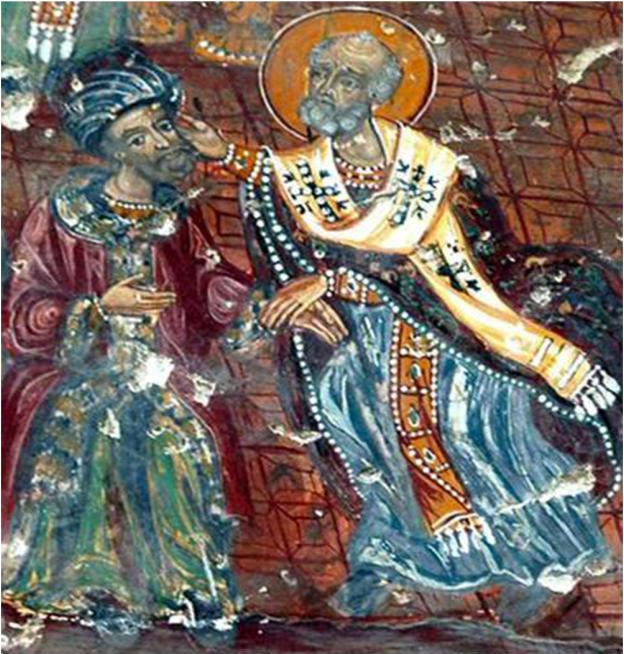

Sursa: doxologia.ro
Mă rog întotdeauna cu mare dragoste la Sfântul Nicolae. Și simt cum Sfântul mă acoperă, în permanență, cu marea lui dragoste de oameni. Îi citesc zilnic Acatistul, este sfântul meu ocrotitor, al cărui nume îl port cu mare cinste și evlavie, deși sunt nevrednic și păcătos.
Sfântul Nicolae m-a călăuzit în toate zilele vieții mele, mi-a fost sprijinitor de nădejde și mi-a ascultat și împlinit mereu rugăciunile.
Anul acesta, in zilele ce-au urmat sărbătorii Sfântului Nicolae (6 decembrie), am dat din întâmplare, pe o rețea de socializare, peste o discuție-dezbatere pe tema celebrei palme pe care Sfântul Nicolae i-a aplicat-o ereticului Arie, la primul Sinod Ecumenic.
Unii dintre participanții la discuție spuneau că, de fapt, Sfântul Nicolae nu l-ar fi pălmuit pe Arie, că asta e o legendă, și că doar l-ar fi mustrat, aceștia încercând, prin această afirmație, să-i șteargă din biografie Sfântului respectiva faptă. Ca și cum acea palmă ar fi fost o pată în existența cu adevărat neîntinată și plină de virtute a Sfântului Nicolae!
Și, uite-așa, a început goana după sursele de informare, pentru a se lămuri chestiunea – daca Sfântul a aplicat sau nu o palmă lui Arie!
Alții, făcând trimitere la câteva surse serioase, afirmau că, indubitabil, Sfântul Nicolae l-a pălmuit pe Arie, dar că o asemenea faptă este total nedemnă de un cleric, și mai ales, de un sfânt.
Așa că printre participanții la această „prețioasă” dezbatere (mai ceva ca la Sinod) s-a iscat o dilemă: ori se renunță la palmă, pentru că, deh, nu se împacă cu sfințenia – și atunci respectivul episod din viața Sfântului Nicolae nu va mai fi nici măcar pomenit, nicidecum celebrat – ori se renunță, pur și simplu, la… Sfânt!
Sunt convins că sunt unii, destul de încuiați la minte și la suflet, care dacă ar putea, l-ar scoate pe Sfântul Nicolae din calendare pentru acea palmă!!!… Așa cum, de pildă, vor să-l scoată pe Sfântul Ștefan cel Mare, pentru că a avut patru neveste, sau mai știu eu pentru ce…!!!
Imi îngădui, aici, să fac o scurtă paralelă cu cazul, destul de recent, al părintelui Calistrat Chifan. Părintele Calistrat a lovit o femeie, o femeie cu dovedite probleme comportamentale, pentru că făcea tulburare în biserică, pentru că deranja slujbele. Părintele a vrut, așa cum e firesc, să facă ordine în biserica unde slujește, și chiar dacă gestul său a fost unul radical (deși, să fim serioși, n-a fost vorba de o brutalitate excesivă!), a fost făcut doar din dorința de a-și săvârși slujbele în liniște, de a da slavă lui Dumnezeu în bună pace și bună rânduială!
Păstrând proporțiile, Sfântul Nicolae, la vremea respectivă, era cleric, era ierarh (și, foarte probabil, era deja Sfânt, având în vedere sfințenia vieții sale, recunoscută de credincioșii creștini din acea vreme), și a dorit, în principiu, același lucru: să facă ordine în Biserica lui Dumnezeu, în cazul său, eliminând o erezie din viața Bisericii!
Morala civică, dar și cea strict ecleziastică, l-a condamnat atunci pe Sfântul Nicolae, ca și astăzi pe părintele Calistrat, pentru gestul său violent.
Astfel că, judecând „în literă” și nu „în duh”, părinții care alcătuiau acel Sfânt Sinod i-au retras Sfântului Nicolae demnitatea de ierarh. Dar, acei părinți, fiind la rândul lor cu viața sfântă, au avut un vis în noaptea imediat următoare evenimentului, prin care Dumnezeu le-a făcut cunoscută voia Sa și totodată faptul ca au greșit fundamental în privința deciziei luate. Sfântul Nicolae le-a apărut în vis, „străjuit” într-o parte de Mântuitorul care-i punea în brațe Evanghelia, iar de cealaltă parte de Maica Domnului care-i punea omoforul arhieresc!
Sfinții părinți de la acel Sinod Ecumenic s-au cutremurat de această vedenie, și căindu-se pentru greșeala lor, l-au repus imediat pe Sfântul Nicolae în treapta de ierarh, de care se făcea vrednic fără tăgadă!
Dar să revenim la dezbaterea de care vorbeam. Participanții la această neverosimilă dezbatere în stupiditatea ei, puteau fi din toate categoriile: atei, seculariști, sectanți, și chiar ortodocși. Cu toții, însa, erau pacifiști. Și totodată, complet străini de duhul Ortodoxiei!
Întâi de toate, cei care îl acuză pe Sfântul Nicolae pentru o palmă administrată unui eretic, uită ca la templul din Ierusalim, Hristos a dat cu… biciul!: „Și erau aproape Paștile iudeilor, și Iisus S-a urcat la Ierusalim. Și a găsit șezând în templu pe cei ce vindeau boi și oi și porumbei și pe schimbătorii de bani. Și, făcându-Și un bici de ștreanguri, i-a scos pe toți afară din templu, și oile și boii, și schimbătorilor le-a vărsat banii și le-a răsturnat mesele. Și celor ce vindeau porumbei le-a zis: Luați acestea de aici. Nu faceți casa Tatălui Meu casă de negustorie.” (Ioan 2, 13-16)
Așadar, Mântuitorul n-a ezitat să folosească chiar biciul pentru a face ordine în Casa Tatălui Său! Casa Tatălui este, astăzi, Biserica noastră creștină apostolică.
Apoi, ortodoxul este pașnic, dar nu pacifist. Pacifismul este o ideologie, nu ne interesează. Este ideologia care transformă omul într-o biată „legumă”, fără spirit, fără reacție, fără personalitate. Face casă bună cu budismul, care prin acele stări de detașare impersonală, îți dă iluzia că ai dobândit pacea interioară. De aceea, deloc întâmplător, mulți pacifiști sunt yoghini.
Problema pacifismului este că n-are absolut nicio legătură cu pacea, cu adevărata pace. Sărmanii pacifiști visează de atâta vreme la pacea globală, hrănindu-se cu iluzii, tocmai pentru că nu pot realiza acea pace interioară, adevărata pace, pe care nu ți-o poate da decât Hristos, în taina inimii tale.
Pacea lui Hristos nu e pacea acestei lumi, nu e o himera a pacifiștilor: „Pace vă las vouă, pacea Mea o dau vouă, nu precum dă lumea vă dau Eu.” (Ioan 14, 27)
Hippioții anilor ’60, predicatorii păcii mondiale, etalau zâmbete și flori, promovând non-violența, dar în particular își băteau nevestele, copiii, părinții, frații, se băteau între ei, iar în spațiul public se băteau cu forțele de ordine, peste tot făceau scandaluri, aducând și mai multă violență în societate. Nu doar că nu aduceau pacea, dar provocau din ce în ce mai multă violență!
Hristos ne spune că așa cum pomul se cunoaște după roadele sale, tot așa și omul se cunoaște după faptele sale:
„După roadele lor îi veți cunoaște. Au doară culeg oamenii struguri din spini sau smochine din mărăcini? Așa că orice pom bun face roade bune, iar pomul rău face roade rele. Nu poate pom bun să facă roade rele, nici pom rău să facă roade bune. Iar orice pom care nu face roadă bună se taie și se aruncă în foc. De aceea, după roadele lor îi veți cunoaște.” (Matei 7, 16-20)
Iar roadele „păcii” pacifiștilor erau violențele extreme pe care ei înșiși le comiteau, sau le provocau.
În cazul pacifiștilor este vorba de un proces psihanalitic obișnuit. Fiind suflete tulburate, chinuite, și neputând să-și biruiască acel zbucium interior, acele frustrări, nereușind să iasă învingători din lupta cu sine, își proiectau acea luptă, acel război interior, în afara lor, în lumea înconjurătoare. De aici, toate actele de violență pe care le săvârșeau. Pentru că atunci când această luptă interioară nu era proiectată în exterior, atunci când nu puteau evada din ființa lor, pe care și-o detestau, adică nu puteau fugi de ei înșiși, violențele se îndreptau, (psiho)logic și inevitabil, împotriva propriei persoane.
Asta explică, alternativ cu numărul mare de violențe din epocă, numărul mare de sinucideri din epocă!
Sinuciderea, însă, putea să fie spontană, directă, prin curmarea bruscă a vieții, sau lentă, prin consumul frecvent de narcotice, alcool, etc., și în general, printr-o viață haotică și dezechilibrată. Aceste „refugii”, aceste „paliative” (narcotice, alcool, viață dezordonată), nu făceau decât să lungească agonia bolnavului pacifist, amăgindu-l, dar în fapt conducându-l, prin efectele lor, către o moarte prematură.
Așadar, atunci când nu ai pace, devii pacifist. Pacifismul este, psihanalitic vorbind, expresia certă a lipsei de pace personală. Dar este și calea cea largă, lașă și comodă (pentru că refuză lupta omului cu sinele său căzut, depravat, păcătos), pe care o aleg mulți. E simplă și la îndemâna oricui, și de aceea este înșelătoare.
Există însă și calea cea strâmtă, luptătoare, grea, foarte grea, dar singura izbăvitoare: Ortodoxia.
Ortodoxia se opune fundamental, categoric, pacifismului!
În Ortodoxie, omul se află într-o luptă permanentă cu sine, cu propriile patimi, neputințe, imperfecțiuni. Și știe că nu poate birui de unul singur, ci doar împreună cu Hristos, care zice: „Fără Mine nu puteți face nimic.” (Ioan 15, 5)
Lupta este însăși condiția omului, este o lege a naturii, pe care n-o poți eluda. Degeaba încerci să o ignori, nu te lasă ea în pace! De aceea, pacifiștii chiar dacă refuză lupta, sunt luptați pe tot parcursul vieții, independent de voința lor! Lupta încetează cu desăvârșire doar atunci când pacifistul a adormit complet, adică e un mort viu, pe deplin împăcat cu starea lui de om căzut, păcătos, și în consecință, pierdut pentru totdeauna!
Ortodoxul înțelege și își asumă total lupta. El nu caută pacea cu orice preț, știe că adevărata pace i-o va da Hristos, la sfârșitul luptei, adică al vieții. Viața lui întreagă e o Golgotă, un șir nesfârșit de necazuri, suferințe, nedreptăți. E o luptă. Ortodoxul n-are tihnă decât atunci când ajunge la mormânt. Puținele momente de liniște din viața sa i le dăruiește tot Hristos, doar ca un mic repaus pentru a putea duce lupta mai departe.
Nu poți fugi, ca un laș, de această luptă! Nu te poți amăgi cu pacifismul, și nici cu budismul, devenind „leguma” depersonalizată care a scăpat de suferința, dar care și-a pierdut identitatea, și-a îngropat eul. În Ortodoxie, eul nu se dizolvă ca în budism, ci se transfigurează, prin lupta permanentă a omului cu patimile sale, acceptând și răbdând suferința (Crucea) ca fiind singurul remediu natural, ontologic, pe drumul des-pătimirii, pentru a dobândi, în final, PACEA, pacea cea adevărată a lui Hristos!
Cine spune că are pace, ori e un sfânt și a dobândit cu adevărat pacea, pacea lui Hristos, încă din această viață (destul de rar, mai ales în zilele noastre), ducând lupta cea bună – ori e un înșelat (mult mai probabil!), un adormit, care îndulcindu-se în patimi și plăceri, împăcându-se cu păcatul si cu diavolul, nu mai are nicio luptă de dus. E mulțumit, liniștit, fericit, dar iremediabil pierdut, daca nu se trezește măcar în al doisprezecelea ceas!
Pacifistul se complace în starea sa de om căzut, își dă frâu liber patimilor, și uite-așa e împăcat și fericit. Dar, iertați-mi analogia, și vaca iese la păscut, se hrănește bine, după care rumegă liniștită în grajdul ei. Iar apoi doarme, iar dimineața cineva vine și o mulge, pentru a o ușura de greutatea laptelui. Putem spune că vaca n-are pace? Sigur că are, ba chiar e fericită, chiar dacă nu știe nici ce-i pacea, nici ce-i fericirea. Dar tot vacă va rămâne până la sfârșitul vieții sale! Nu va putea ieși din condiția sa de… vacă! Vaca n-are nicio vină, ea nu face decât sa-și urmeze instinctual, inconștient și natural condiția.
Omul, vârful Creației Dumnezeiești, Chip și Asemănare a lui Dumnezeu, este chemat la îndumnezeire. Iar pentru a atinge acest sublim scop pentru care a fost creat, omul trebuie să ducă o luptă constantă, totală, jertfelnică, pe tot parcursul vieții sale. Dacă neagă lupta, atunci își neagă condiția, și negreșit, va sfârși rău.
Pe la sectele neoprotestante toată ziua se cântă: „I love Jesus, Jesus loves me!”. Și cu asta, gata. Se cred mântuiți. Au pace, nu sunt tulburați de nimeni și de nimic. Clamează pacea peste tot, pacifiști fiind și ei, desigur. Sunt grași, frumoși, sănătoși, n-au niciun stres, nicio luptă de purtat în afara celor existențiale obișnuite. Și râd de ortodoxul care, aflându-se în lupta duhovnicească, e plin de necazuri, suferințe, lipsuri, boli, etc., fălindu-se cu liniștea lor sufletească și cu bunăstarea lor materială, o mulțumire de sine pe care ei o numesc „pace”. Ei cred că această așa-zisă „pace” este semnul evident al binecuvântării lui Dumnezeu, și de aceea se cred deja mântuiți. Amarnică înșelare!
E pace și bucurie la acești sectanți. Din păcate, din tot acest „templu” al păcii și bucuriei lor, lipsește tocmai… Jesus! Adică, Pacea și Bucuria!
Cel mai pacifist dintre pacifiști este, însă, Papa! Una este să te rogi pentru pace, și alta este să umbli din stat în stat, pe toată întinderea planetei, ca un comisar (corect) politic, amendând orice conflict, clamând (și nu propovăduind, pentru ca propovăduirea are altă semnificație!) pacea universală. Papa este pacifistul de serviciu al lumii de azi! Iar papalitatea a devenit, de multă vreme, cea mai pacifistă instituție de pe pământ, trecând de la o extremă la alta (adică de la arderile pe rug practicate în vremea Inchiziției și de la sângeroasele războaie cu protestanții, la blamarea categorică, astăzi, a oricărei confruntări violente statale, inter-statale, inter-etnice, inter-religioase, etc.).
Catolicismul este, astăzi, o „dolce farniente”, fundamental rătăcit și complet adormit. A „rezolvat” și problema păcatului pentru credincioșii săi, pentru ca aceștia să poată dormi total liniștiți: - Ei, și ce dacă ai păcate, plătești acolo niște „indulgențe”, și ai scăpat! Așadar, e pace și la catolici. Iar Papa le-a spus, cunoașteți expresia: „Dormiți (cum altfel, decât…) în pace!”
La polul opus, se află ortodoxul care neîncetat se luptă pentru mântuirea sa. El găsește bucuria doar în luptă, înțelegând sensul profund al luptei și al jertfei, fără de care nu se poate mântui.
Un Sfânt Părinte, după cum citim prin Paterice, se arăta îngrijorat că, într-o zi, nu avusese nicio ispită, niciun necaz, nicio luptă, și de aceea credea că Dumnezeu l-a uitat. Poate că acel Sfânt Părinte ajunsese la des-pătimire, la Biruință, dar iată grija lui constantă de a merge pe calea luptei, pe calea lui Dumnezeu! Având conștiința deplină a faptului că Dumnezeu ne-a rânduit lupta ca fiind singura cale spre mântuire, nemaiavând nicio luptă fie și numai într-o singură zi, s-a temut că Dumnezeu l-a uitat!
Ieroschimonahul Simion de la Mănăstirea Sihăstria spunea cândva, adresându-se atât monahilor cat și mirenilor: „Să nu vă amăgiți, cumva, că vă mântuiți așa, cu mâncare multă, cu burțile pline, cu un trai confortabil și călduț, fără ispite și necazuri, fără luptă, fără nevoință!”
Mântuitorul spune clar: „În lume necazuri veți avea…”. Dar ne dă și nădejdea biruinței: „…dar îndrăzniți. Eu am biruit lumea.” (Ioan 16, 33)
Și mai spune, la fel de clar, că lupta este calea creștinului în lume: „Nu socotiți că am venit să aduc pace pe pământ; n-am venit să aduc pace, ci sabie.” (Matei 10, 34)
Ortodoxul este creștinul drept-măritor, asumat și mărturisitor. Până acum am vorbit doar de lupta ortodoxului cu sine, cu firea sa căzută, această luptă fiind esențială pe drumul mântuirii. Mai sunt, însă, și alte lupte de purtat: lupta cu lumea și lupta cu diavolul, diavolul fiind, așa cum spune Însuși Hristos, stăpânitorul acestei lumi.
Lupta ortodoxului cu diavolul se desfășoară atât în plan văzut, cât și nevăzut. În plan nevăzut, diavolul îl atacă pe om cu tot felul de gânduri și senzații pătimașe, ispitindu-i firea păcătoasă, spre a-l determina să cadă în păcat. Această luptă nevăzută este magistral redată, cu lux de amănunte, în scrierile filocalice și patristice ale Sfinților noștri Părinți.
În plan văzut, diavolul aduce ispite și provocări prin lumea înconjurătoare, al cărei stăpân este, prin oameni și situații create, războiul ortodoxului cu lumea fiind, în ultimă instanță, tot un război cu diavolul - vrăjmașul absolut al umanității.
Majoritatea oamenilor nu conștientizează această luptă aprigă care se dă, încă de la începuturile Creației, între om și diavol, majoritatea e pacifistă, împăcată cu starea și mersul actual al lumii, o lume stăpânită de diavol.
În starea lor de „pace”, adică de adormire a conștiinței, cei mai mulți dintre oameni nu doar că nu mai luptă pentru ei înșiși, pentru mântuirea lor, dar se fac unelte ale diavolului, pricini de ispită și aducători de necazuri și primejdii pentru cei care se ostenesc în lupta cea bună spre a-și câștiga un loc în Împărăția lui Dumnezeu.
Atunci când ai făcut pace cu lumea, și deci cu diavolul, stăpânitorul lumii, devii inconștient și involuntar, sluga diavolului, instrument de manipulare și arma prin care diavolul lovește în cei care slujesc lui Hristos!
În acest război al ortodoxului cu lumea, un rol determinant îl are mărturisirea creștină. Creștinul trebuie să-L mărturisească pe Hristos atât prin faptele credinței (rugăciunea, participarea la slujbele Bisericii, împărtășirea cu Sfintele Taine ale Bisericii, conduita în societate, etc.), cât și prin luarea sa de poziție, prin atitudinea sa fermă împotriva oricărui atac asupra lui Hristos și a Bisericii Sale.
Trebuie înțeles că războiul ortodoxului cu lumea nu este un război împotriva omenirii, ci împotriva păcatului care stăpânește omenirea. Lumea este doar contextul nefericit în care omul a devenit robul păcatului și al diavolului. Ortodoxul luptă pentru salvarea omului, pentru eliberarea lui din această robie, și o face prin mărturisirea sa de credință.
Gestul Sfântului Nicolae este un gest sublim și categoric de mărturisire creștină. Este sublim pentru că a venit ca răspuns, ca reacție la o mare erezie care ar fi putut realmente spulbera învățătura cea dreaptă a Bisericii despre Hristos. Și este categoric prin radicalitatea lui.
Sfântul Nicolae n-a umblat „cu mănuși”, cu menajamente, cu jumătăți de măsură. I-a ars o palmă sinceră și fermă lui Arie. O palmă dată cuiva nu este un act de o violență extremă. Este însă, ca în cazul Sfântului Nicolae, un gest extrem de sugestiv, pentru că vrea să arate gravitatea spuselor și/sau faptelor acelei persoane care primește acea palmă. O primește pentru că se „învrednicește” de ea, o primește pentru că o merită.
Sfântul Nicolae a amendat obrăznicia și rătăcirea lui Arie. Gestul în sine nu este unul extrem de violent (este chiar „blând” prin comparație cu, spre exemplu, arderile pe rug cu care catolicii îi pedepseau pe eretici; acelea erau, într-adevăr, violențe extreme!), dar este expresia unei atitudini radicale, extreme, intransigente, ca răspuns firesc la o erezie extremă, pentru că învățătura lui Arie nega Însăși Dumnezeirea lui Hristos!
Am citit undeva că un Sfânt Părinte își învăța ucenicul să rabde orice insultă, orice jignire, orice calomnie care i s-ar aduce, fără să reacționeze, dar dacă jignirea sau minciuna Îl vizau pe Hristos, atunci să… „se mânie tare”!
Sfântul Nicolae, plin de râvnă și dragoste pentru Hristos, n-a putut răbda acea cruntă blasfemie a lui Arie, așa că l-a mustrat zdravăn pe acesta, aplicându-i și o palmă. O palmă binecuvântată, sfințită. N-am nicio îndoială că, în acele momente, Sfântul Nicolae se afla într-o stare de grație divină. Cum spunem noi, ortodocșii: „s-a umplut de Duhul Sfânt!” (Poate că vrednicul apărător al dreptei învățături a lui Hristos, Nicolae, ajunsese deja la sfințenie, și atunci Duhul Sfânt lucra permanent în el!). Iar palma care a lovit obrazul lui Arie a fost, de fapt, a lui Dumnezeu.
Să nu uităm că Sfântul Nicolae era, la vremea respectivă, o autoritate atât clericală cât și duhovnicească. Era un episcop cu viață sfântă, foarte respectat și iubit în Biserică. Iar cuvântul și atitudinea lui în orice chestiune, nu doar bisericească, cântăreau foarte mult. De aceea, Sfântul Nicolae, prin gestul său, a vrut să arate gravitatea rătăcirii lui Arie, dar și să ofere pildă de mărturisire și de luptă creștinilor, nu doar celor din acea vreme, ci și nouă urmașilor, de a reacționa ferm ori de câte ori vreo erezie încearcă să-și facă loc în sânul Bisericii, sau cineva ori ceva încearcă să strice rânduiala sau învățătura cea dreaptă, lăsate de Dumnezeu.
Bunăoară, în timpul pandemiei de coronavirus, după cum bine vă amintiți, s-a încercat schimbarea ori interzicerea unor rânduieli și obiceiuri bisericești: împărtășirea cu lingurițe de unică folosință, fiecare credincios cu lingurița lui - ignorându-se faptul că lingurița cu care preotul împărtășește pe toată lumea este un obiect de cult, special creat pentru administrarea Sfintei Împărtășanii, și nu poate fi înlocuită cu nu știu ce lingurițe de plastic pe care apoi să le aruncăm la coșul de gunoi, ca atunci când, de exemplu, ne servim cafeaua! – interzicerea sărutatului icoanelor și a Sfintelor Moaște, neungerea cu Sfântul Mir a credincioșilor de către preot la sfârșitul slujbei, apelându-se la varianta stropirii cu aghiazmă la grămadă, purtatul obligatoriu al măștii medicinale în biserică, și altele.
Reacția clericilor, dar și a credincioșilor, la toate aceste „inovații”, a fost una destul de slabă aș zice, dovadă că unele din aceste obiceiuri noi sunt prezente și astăzi, pe ici-pe colo, în bisericile noastre. Sunt și astăzi biserici unde preoții nu mai miruiesc credincioșii la sfârșitul slujbei, mulțumindu-se doar să-i stropească cu aghiazmă, sunt și astăzi destui credincioși care vin cu mască la biserică, rămași „setați” din vremea pandemiei, refuzând să sărute icoanele sau Sfintele Moaște! Și, apropo de ungerea cu Sfântul Mir, puțini credincioși înțeleg, de pildă, că nu-i același lucru să te ungă preotul cu mir în biserică, cu a te unge tu, singur, la tine acasă.
Așadar, preaiubitorul, preablândul, preamilostivul Sfânt Nicolae a lovit un eretic. N-a făcut-o din răutate sau din ură, nici măcar din exces de zel. A făcut-o din iubire, din iubire curată, din marea sa iubire pentru Adevăr, pentru Hristos!
Pentru conștiința săracă a pacifiștilor, pentru gândirea și trăirea lor cu totul superficiale, fapta Sfântului Nicolae nu înseamnă nimic mai mult decât o corecție fizică, și de aceea este de neacceptat. Principiul non-violenței, în care ei cred absolut, nu se poate împăca nicicum cu fapta și atitudinea Sfântului Nicolae.
Ortodoxia este o credință mărturisitoare. Istoria Bisericii noastre ortodoxe este plină de acte de mărturisire curajoase, care au mers, de multe ori, până la jertfa supremă, până la mucenicie.
Sigur că, privit prin prisma regulilor dialogului, ale dezbaterii, ale democrației, gestul Sfântului Nicolae este de neînțeles. Sfântul Nicolae nu a venit la acel sinod să dezbată, ci să mărturisească! Democrația nu are ce căuta aici. Și, în general vorbind, nu există nicio compatibilitate între creștinismul autentic, ortodox, și democrație. Ortodoxul se mișcă în cu totul alt registru decât lumea democratică. Ortodoxul îi dă Cezarului, adică democrației globaliste, doar fărâmiturile existenței sale, pentru că adevărata sa viață se desfășoară într-un alt plan, acela al mântuirii în Hristos!
De aceea, gestul Sfântului Nicolae nu poate fi înțeles decât în cheia trăirii creștine, a mărturisirii adevărului de credință. La urma urmei, mărturisirea Adevărului este tot ceea ce contează, indiferent de circumstanțe și indiferent de forma (violentă sau nu) pe care o capătă respectiva mărturisire.
Pentru ortodoxul temeinic așezat în credința lui, gestul mărturisitor și pilduitor totodată al Sfântului Nicolae rămâne un episod marcant în istoria și viața Bisericii noastre ortodoxe, trăit și înțeles în adevărata lui semnificație, aceea de act pus în slujba mărturisirii Adevărului!
Este clar că nu poți fi și ortodox, și pacifist. Dacă ești pacifist, îl scoți pe Sfântul Nicolae din calendare și îl condamni pentru agresiune. Dacă ești ortodox, ești gata oricând să aplici o palmă zdravănă oricui atentează la Hristos sau la Adevărurile Bisericii lui Hristos!
Așa că îi lăsăm pe pacifiști să se închine Principiului (al non-violenței), iar noi ortodocșii ne vom închina, în continuare, Sfântului!
Marele duhovnic al Neamului Românesc, părintele Iustin Pârvu, spunea la un moment dat că la poporul român este „inflație” de smerenie, și că în vremurile de azi, este mare nevoie ca poporul român să aplice palma Sfântului Nicolae, să urmeze exemplul Sfântului.
Smerenia nu strică oricât de multă ar fi, cu cât este mai multă cu atât suntem mai aproape de mântuire. Si, cu adevărat, niciodată nu suntem suficient de smeriți pentru a fi vrednici de Împărăția Cerurilor.
Poporul român se distinge, dacă vreți, chiar între celelalte popoare ortodoxe, prin adânca lui smerenie, virtute câștigată în urma răbdării atâtor secole de suferințe și nedreptăți.
Dar ceea ce a vrut să spună Părintele Iustin este că, măcar din când în când, atunci când este neapărată nevoie (și astăzi este mare nevoie!), poporul român să recurgă la palma mărturisitoare și izbăvitoare a Sfântului Nicolae.
Pentru că prea ne-au încălecat și ne asupresc, fără milă și fără scrupule, dușmanii Neamului nostru Românesc, ai Ortodoxiei, ai lui Hristos!
Mult prea mult au profitat și profită vrăjmașii Neamului Romanesc de blândețea, smerenia, și bunul simț creștinesc, ale poporului român!
Ortodoxia este aspră și luptătoare pentru că respectă legile naturale ale Creației. Ea îl ajută pe om să-și împlinească destinul, îl așează în armonie cu Creația. De aceea spunea Părintele Rafail Noica: „Ortodoxia este însăși firea omului!”.
Ortodoxul înțelege și acceptă în viața lui pedeapsa care vine pentru păcatele sale, pedeapsă venită din marea iubire a lui Dumnezeu pentru om, în mod pedagogic, pentru îndreptarea omului și nu pentru pieirea lui: „Căci pe cine îl iubește Domnul îl ceartă, și biciuiește pe tot fiul pe care îl primește.” ( Evrei 12, 6) Din acest verset biblic s-a născut expresia populara românească: „Bătaia e ruptă din Rai!”. Expresia a creat un adevărat șoc în lumea pacifistă modernă. Toți psihologii și pedagogii lumii de azi condamnă cu vehemență o asemenea pedagogie, ca fiind total neavenită și ineficientă. Sigur, în nebunia lor, nu-și dau seama că Îl contrazic pe Dumnezeu, Cel care vorbește prin Sfântul Apostol Pavel! Nu-i vorba de tiranie aici, nici pomeneală, Dumnezeu nu poate fi tiran, ci de singura pedagogie care poate fi, și trebuie să fie, aplicată omului, în majoritatea situațiilor, singura care, în cele mai multe momente, dă cu adevărat roade bune - pe cât de necesară, pe atât de eficientă: „Orice mustrare, la început, nu pare că e de bucurie, ci de întristare, dar mai pe urmă dă celor încercați cu ea roada pașnică a dreptății.” (Evrei 12, 11)
De aceea eu, ca un păcătos și nevrednic ce sunt, mă mulțumesc cu… „nuielușa” Sfântului Nicolae! „Nuielușa” nu este doar pentru copiii neascultători, ci și pentru creștinul adult care calcă pe de lături! Și „nuielușa” e un dar, și poate fi mai prețios decât multe alte daruri, pentru că este spre îndreptarea păcătosului. Fie și „nuielușa”, numai să nu mă uite Sfântul! Deși, trebuie să recunosc că, de-a lungul timpului, în marea lui dragoste și milă, Sfântul Nicolae mi-a oferit multe bucurii și prea puțin „nuielușa” pe care mărturisesc că o meritam din plin.
Povestea cu „nuielușa” este, desigur, la fel de neînțeles pentru pacifiști ca și episodul cu palma. Observați că nu se spune „nuiaua”, ci „nuielușa”! Este un detaliu semnificativ care vrea să arate că Sfântul Nicolae pedepsește cu bunătate și dragoste pe creștini, așa cum o face Însuși Dumnezeu. Este o gingășie aici, atunci când spui „nuielușa”, ca și într-o altă expresie din popor: „Măi, bată-te Dumnezeu, să te bată!”, expresie care se folosește atunci când cineva a făcut o poznă și care este rostită cu oarecare tandrețe…
Deci, nici vorbă de tiranie în felul în care Dumnezeu sau Sfinții săi îi pedepsesc pe creștini, ci pură pedagogie, izvorâtă din marea dragoste a Lui Dumnezeu și a Sfinților Săi pentru om, spre binele și îndreptarea omului. Pedeapsa vine nu ca să-l dezarmeze pe om, ci ca să-l mobilizeze mai tare la luptă!
Atât palma administrată de Sfântul Nicolae ereticului Arie, cât și „nuielușa” cu care același Sfânt îi pedepsește pe creștini, sunt acte puse în slujba lui Dumnezeu, care exprimă voia lui Dumnezeu. Dacă în cazul palmei e vorba de a-L mărturisi pe Dumnezeu, în ceea ce privește „nuielușa” este vorba de pedagogia lui Dumnezeu, aplicată de Sfântul Nicolae celor aflați pe drumul drept al mântuirii.
Pentru pacifiști și progresiști însă, în viziunea lor profană, limitată, acestea vor rămâne doar niște manifestări de violență, ceea ce le oferă motivul de a contesta în continuare, cu înverșunare, Ortodoxia, ca fiind o frână în calea „păcii” și a „progresului”, a civilizației Lumii Noi.
În concluzie, ortodoxul își asumă lupta rânduită de Dumnezeu pentru om, urmând legile naturale ale vieții, în vreme ce pacifistul, refuzând orice formă de violență, refuză în fapt, lupta de orice fel, ignorând legile Creației, rânduielile firești ale lumii. În felul acesta, pacifistul își ascunde lașitatea și slăbiciunea de sine în spatele unui așa-zis „principiu”: non-violența.
Iată ce spune Căpitanul Mișcării Legionare, ortodoxul Corneliu Zelea Codreanu, pe care îl citez aici pentru admirabila sa luciditate (într-o lume îmbătată de pacifism, umanitarism, progresism, și alte sofisme corect politice, Căpitanul se dovedește a fi un om cu adevărat treaz!), dar și pentru că viziunea sa asupra stării de fapt a lumii, în ordinea firească a Creației, exprimă chintesența articolului de față:
„Respingeți cu îndărătnicie toate falsele teorii ale falșilor apostoli umanitariști și pacifiști, care tind să vă desarmeze sufletește.
Nu uitați că dreptul este o proprietate care se sprijină pe forță.
În lume oamenii se luptă. Din adâncul mării și până în înălțimile văzduhului, nu-i decât o luptă în care animalele se devorează unele pe altele.
În lumea plantelor, în natură, în păduri și pe câmpii, acolo unde oamenii se duc să guste pacea, nu este în realitate decât o luptă surdă și necruțătoare pentru viață.
Voesc să spun că nu există în natură „pacea” pe care o cântă toți poeții și literații, nu există decât o singură realitate, mare, crudă, superbă: răsboiul.
Neamurile care înțeleg acest adevăr trăesc. Celelalte pier.”
(Corneliu Zelea Codreanu)
Acest citat face parte dintr-un text mai lung al unei circulare trimise de Căpitan camarazilor săi legionari. Am să redau integral acest text, cealaltă jumătate a textului referindu-se în mod expres la poporul român, și de aceea este de maximă importanță pentru noi, românii:
„Românii, înconjurați de pretutindeni de vrăjmași cu pofte mari și invadați înăuntru de dușmani care îi slăbesc și le macină sistematic puterile de rezistență și de viață, nu vor putea rezista în viitor, decât dacă vor înțelege că pe pământul lor trebue să crească soldații ca brazii în pădure.
De la acest adevăr fundamental, și în această direcție spirituală trebue să pornească întreaga noastră activitate.
Viața acestei Patrii milenare va fi atunci asigurată.
Pentru viața ei! Pentru fericirea ei! Pentru înflorirea ei!
La luptă, deci, cu toții.”
(Corneliu Zelea Codreanu)
Lupta este singura cale spre Adevăr, spre mântuire, spre împlinire. Fie că este vorba de lupta omului cu sine, fie că este vorba de lupta omului pentru neamul său, patria sa, familia sa, credința sa, ș.a.m.d. Așa cum am arătat, ortodoxul își asumă total lupta. Cea mai importantă este lupta omului cu sine, pentru că dacă omul reușește să-și biruiască firea păcătoasă, înaintând în asemănarea cu Dumnezeu Creatorul său, atunci va fi capabil să se lupte și cu forțele întunericului care au pus stăpânire pe această lume. O Lume Nouă, clădită de aceste forțe ale întunericului, în care ortodoxul nu-și mai găsește nicicum locul.
Noi ortodocșii avem o biserică în Cer, numită Biserica Biruitoare, alcătuită din îngeri, sfinți, și din toți cei care s-au mântuit ducând lupta cea bună, și una aici pe pământ, numită Biserica Luptătoare. Luptătoare, așadar, nu pacifistă. Iar noi cei care suntem în Biserica Luptătoare, avem nădejdea că vom ajunge în Biserica Biruitoare, în Împărăția Cerurilor, cu rugăciunile și ajutorul celor care sunt deja acolo și ne sprijină neîncetat în greaua luptă pe care o avem de purtat pe acest pământ.
Nu-mi mai rămâne să spun decât atât:
La luptă, deci, cu toții!
Comentarii